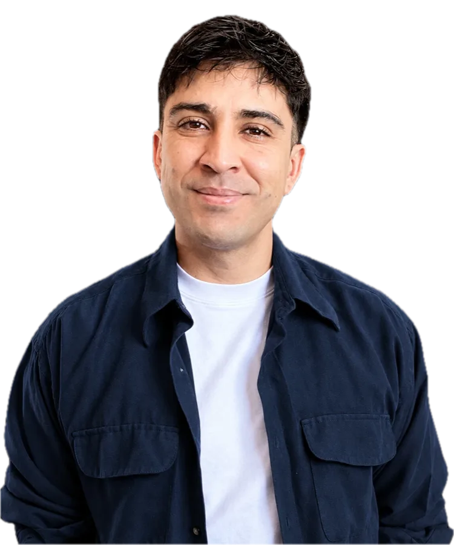

De la marca al producto, proyecto a proyecto.
Soy Luis Vicencio, diseñador de la Universidad de Valparaíso, con estudios de Product Design for Innovation en el Politecnico di Milano, un diplomado en Branding Estratégico y formación en Product Owner y Scrum.
Cada proyecto me dejó una herramienta nueva: empecé diseñando identidades, sumé la estrategia de marca y hoy también lidero productos digitales. Me mueve ayudar a que las empresas crezcan, que su marca se viva por dentro y por fuera, y hacerlo en colaboración con otros creadores y con los propios clientes.
En Yomecontrolo aprendí que una buena estrategia de marca necesita herramientas de producto para llegar a producción. Hoy acompaño las dos etapas: le doy un norte al producto y lo llevo paso a paso, entregable a entregable, hasta que cada entrega cumple lo esperado.
Aprendizajes
Lo que me llevé.
Este proyecto me mostró que una buena estrategia de marca necesita herramientas de producto para llegar a producción. Por eso me formé en Product Owner y Scrum, y hoy acompaño las dos etapas.
Aprendí a reconocer las alertas tempranas de un proyecto: prioridades difusas, decisiones sin responsable claro y expectativas sin acordar. Hoy las reviso desde el primer día.
Trayectoria
Más de 7 años entre marca, experiencia y producto.
-
2025 – 2026
Líder de Innovación y Productos Brand Manager y Product Owner · Bytequest SpA
Lideré como Product Owner, con Scrum, un módulo de IA para la atención por chatbot de víctimas, con auditoría y observabilidad de un call center, para una institución pública del sector justicia. Coordiné un equipo de 7 personas, realicé QA de los entregables e informes mensuales de avance, e impulsé productos de uso legislativo, gestión de crisis municipal y excelencia operacional.
-
2022 – 2025
CEO Cofundador Studio Dinoi
Cofundé y lideré una agencia que integraba branding, desarrollo web, ecommerce y comunicación corporativa. Asesoré a pymes de rubros como cervecerías, asesorías legales, productos para mascotas, servicios B2B, productos químicos y fundaciones.
-
2020 – actualidadActual
Diseñador Freelance luisdesign.cl
Comunicación digital, branding y diseño para pequeñas y medianas empresas.
-
2019 – 2020
Diseñador de Marcas y UX/UI Kimsa
Identidad de marca y experiencia de usuario para los clientes de la startup.
-
2018 – 2019
Diseñador y Encargado de Comunicaciones Waterman
Línea comunicacional de la empresa y sistema de diseño para cada proyecto de seguridad acuática: diseño web, motion graphics y diseño gráfico.
Formación
Tu próximo proyecto empieza acá.
Cuéntame en qué etapa está tu marca o tu producto y te respondo con una propuesta de alcance, plazos y presupuesto.